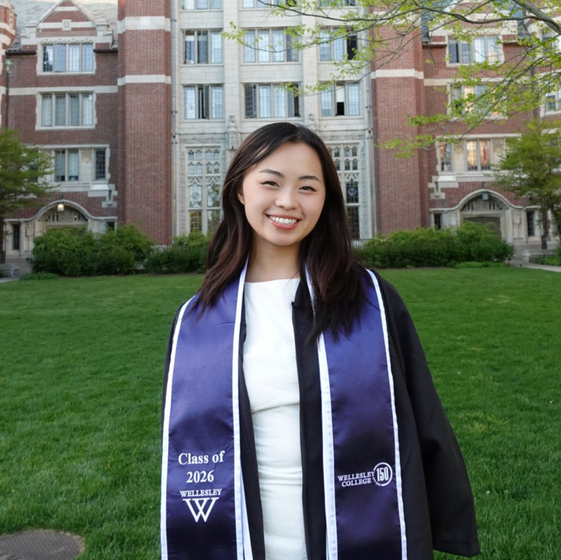

I’m a first year PhD student in Computer Science & Informatics at Emory University. My research sits at the intersection of machine learning, healthcare, and human-centered AI.
I’m especially interested in adaptive systems, uncertainty, personalization, and how computational tools can help people understand information and make decisions in high-stakes settings.

Before coming to Emory, I studied Computer Science and Biochemistry at Wellesley College. My background spans probabilistic modeling, clinical forecasting, medical imaging, and human-centered AI.
Broadly, I’m interested in building machine learning systems that account for the fact that people are different — in what information they have, what they need, and how they make decisions.
At the MOGU Lab, I worked on probabilistic methods for forecasting suicide-related events for patients with limited longitudinal data. This work focused on modeling patient similarity while preserving meaningful individual heterogeneity.
As an AI Studio Fellow at Novartis, I worked with neural-network embeddings for histopathology images and evaluated methods for retrieving visually and clinically similar image samples.
Genesis Hang, Annie Chen, Hope Neveux, Matthew K. Nock, Yaniv Yacoby
NeurIPS Learning Time Series for Health Workshop, 2025
PhD in Computer Science & Informatics
B.A. in Computer Science · Minor in Biochemistry
Cross-registered student; 6.100A, 6.100B, 6.101
Wellesley College
Supported students in probabilistic machine learning through coursework and weekly office hours, with topics including regression, classification, graphical models, and model evaluation.
Wellesley College
Massachusetts Institute of Technology
OUTSIDE THE LAB
Trying to stay crafty and healthy while also keeping my tastebuds satisfied!
More outside the lab →